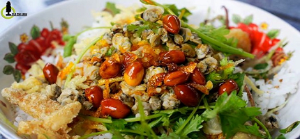
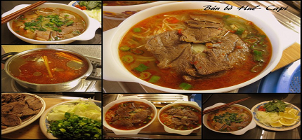
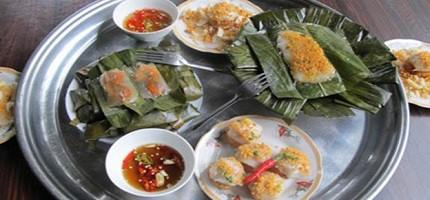
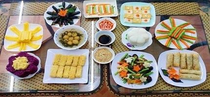
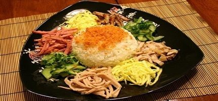
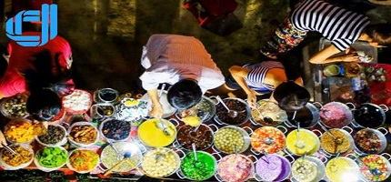

-

CƠM HẾN VÀ NHỮNG MÓN ĂN TỪ HẾN
Nằm thật sâu dưới dòng sông, ẩn trong lớp bùn cát của tạo hóa, hến là món ăn dân dã hết sức quen thuộc của người Việt ta. Hến mềm mà dai dai, nước luộc từ hến rất ngọt, hầu như ai cũng thích. Hến có thể làm thành nhiều món khác nhau và món đầu tiên phải kể nhất định là cơm hến. Cơm hến có ở nhiều vùng, nhưng ngon nhất thì phải đến Huế. Bát cơm hến của Huế có màu trắng thơm của gạo nấu chín vừa được để nguội, có hến xào hành phi thơm phức, có tóp mỡ chiên giòn béo ngậy, có rau sống tươi sạch bắt mắt và cả vị đậm đà của mắm ruốc Huế.
CHI TIẾT -

BÚN BÒ HUẾ - LINH HỒN CỦA ẨM THỰC CỐ ĐÔ
Thật không sai nếu gọi bún bò Huế là linh hồn của ẩm thực cố đô bởi món ngon nơi đây đã theo bước chân ai có mặt khắp mọi miền đất nước. Bởi người ta thích, người ta ‘nghiện’ vô cùng cái vị ngọt thanh mà đậm đà của bún bò xứ Huế, ăn rồi là nhớ ngay. Nhắc đến bún bò Huế, phải kể tới nước dùng được hầm từ xương để có vị ngọt và mùi vị đặc trưng, không quá nồng nhưng đủ để thực khách cảm nhận rõ ràng nhất. Tiếp đến là miếng giò chân giò, thêm một miếng giò tự nắm, vài lát thịt bò thái mỏng đầy ắp cả tô, có cả màu xanh đẹp mắt của lá hành tươi thái nhỏ.
CHI TIẾT -

CÁC LOẠI BÁNH HUẾ - ĂN CHƠI MÀ NO THẬT
Du lịch Huế, có dịp lang thang khắp các con đường khi trời chập chạ tối, bạn sẽ gặp các dì đẩy xe đến góc đường, bày biện bàn ghế nép vào một góc của vỉa hè hay dọn hàng ra trước mặt nhà, bắt đầu bán đủ thứ bánh ngon của Huế. Người Huế thích các loại bánh chế biến từ bột gạo để làm bữa ăn phụ nên đây còn được xem là nét văn hóa ẩm thực riêng của cố đô. Du khách có thể ghé hàng quán ngồi ăn chơi chén bánh bèo, dĩa bánh bột lọc hoặc vài lá bánh khoái tôm thịt nóng hổi.
CHI TIẾT -

THANH ĐẠM MÓN CƠM CHAY Ở HUẾ
Nếu đã chán chê các món ăn mặn, muốn để thanh lọc cơ thể và thay đổi khẩu vị thì hãy chuyển sang các món chay khi du lịch Huế. Huế nổi tiếng là vùng đất tâm linh của Phật giáo, nên cơm chay ở Huế rất ngon, được chế biến đa dạng thành nhiều món ngon chẳng kém thức ăn mặn. Ở Huế có rất nhiều quán ăn chay mà du khách có thể ghé ăn, nhưng ngon nhất phải kể đến Liên Hoa ở số 3 đường Lê Quý Đôn.
CHI TIẾT -

LẠ LÙNG MÓN CƠM ÂM PHỦ NHƯNG NGON KHỎI CHÊ
Cơm âm phủ, vừa nghe tên thôi cũng đủ làm người khác phải giật mình, song với người Huế và cả người yêu Huế, đã đến Huế đôi lần thì món ăn này không còn gì lạ.
CHI TIẾT
Đây là món cơm cực kỳ nổi tiếng tại Huế, được bán khắp nơi ở các quán ăn tại thành phố. Một phần ăn được xếp đẹp mắt trên đĩa có bảy màu, tượng trưng cho bảy bước đi đầu tiên của Đức Phật.
Cơm trắng được để ở giữa, xung quanh là thức ăn kèm đủ loại mà tiêu biểu nhất có thịt ba rọi, chả lụa Huế, tôm, nem nướng, dưa leo, trứng rán,...
Du khách có thể thay đổi thành phần theo sở thích của mình. -

DU LỊCH HUẾ GHÉ HẺM ĂN CHÈ
Nếu như Hà Nội làm người ta thương nhớ bởi ‘36 phố phường’ thì Huế cũng làm ai đó khắc khoải với nỗi nhớ về 36 thứ chè. Chè ở Huế chẳng biết có tự bao giờ, nhưng thường được bày bán trong các ngõ nhỏ nên được gọi là chè hẻm. Món chè hẻm gần gũi mộc mạc, đi đâu cũng thấy nhưng mang cả nét tinh tế của ẩm thực xứ Huế. Mỗi loại chè hẻm ở Huế lại có một phong vị riêng, từ chè khoai môn, chè đậu, chè bắp bình dị đến chè hạt sen, chè bưởi ‘sang chảnh’. Du khách có thể ăn từng món để cảm nhận từng hương vị của mỗi món chè hay trộn chung thành thập cẩm, tạo cảm giác lạ vị khi nhai tỉ ti thứ hạt khác nhau trong miệng.
CHI TIẾT


{kind=link}
{kind=link}
{kind=link}
{kind=link}
{kind=link}
{kind=link}
Recent Posts
- Etiam suscipit bibendum Aliquam erat volutpat vVivamus accumsan magna sit amet. Sed vel justo ut sodales nulla. In hac habitasse platea dictumst.
- Aliquam at felis odio Rhoncus purus, in pretium libero ut libero molestie nec lacinia mi fringilla tincidunt eget ante gravid eu vulputate odio.
- @templatemo at scelerisque urna in tellus varius ultricies ante gravid sed eu vulputate.
- Suspendisse enean #FREE tincidunt massa in tellus varius ultricies. Ut eget ante sem.
- Aenean tincidunt massa in tellus varius et. Nullam metus ut diam neque. http://bit.ly/13IwZO
About
Etiam tempus volutpat velit eget egestas. Sed tempor, sapien a tincidunt commodo, ante nisl aliquam tortor, et tempus tellus ante vitae elit. Vivamus eget justo est, ac auctor nibh. Mauris sed pretium turpis. Proin vitae nibh enim, vel blandit massa. Maecenas sit amet elit lectus, id porttitor dignissim lacus.